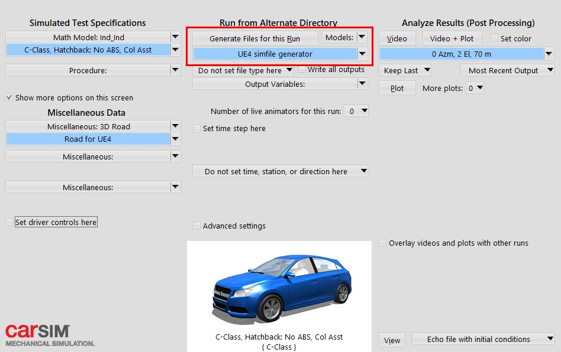
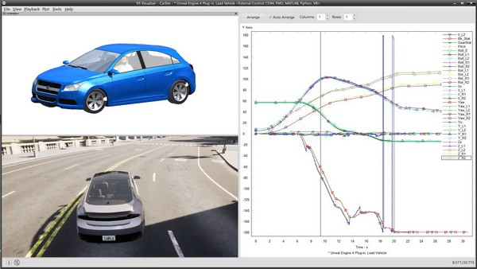

CarSim 集成¶
Carla 与 CarSim 的集成允许将 Carla 中的车辆控制转发到 CarSim。CarSim 将对车辆进行所有必需的物理计算，并将新状态返回给 Carla。
本页向您展示如何生成.sim文件，解释 Carla 和 CarSim 之间的车辆尺寸如何关联，以及如何使用 CarSim 集成在 Carla 上运行模拟。
在你开始之前 ¶
- 您需要 CarSim 许可证才能启动并运行该软件。如果您目前没有 CarSim 许可证，您可以在 此处 联系团队以获取信息。
-
要允许与虚幻引擎通信，您需要安装适用于虚幻引擎 4.24 的 VehicleSim Dynamics 插件（版本 2020.0）。有关查找插件特定版本的信息，请检查此 链接 。插件的安装取决于您的操作系统：
对于 Windows:
在 这里 获取插件。
对于 Ubuntu:
- 在 这里 下载插件。
-
将文件
CarSim.Build.cs替换为 此处 找到的文件（或者 CarSim.Build.cs ），以便为 Ubuntu 使用正确的求解器。 -
如果您使用的是 Carla 的打包版本，则可以跳过此步骤。打包版本已使用此标志编译，但如果您从源代码构建 Carla，则需要使用
--carsim标志编译服务器。
如果您从源代码构建 Carla，请在根文件夹中运行以下命令以使用
--carsim标志编译服务器：
make launch ARGS="--carsim"
设置 CarSim ¶
以下部分详细介绍了如何生成运行模拟所需的 .sim 文件。还有关于 Carla 和 CarSim 之间车辆尺寸关系的详细重要信息。
生成.sim 文件 ¶
该.sim 文件描述了要在 Carla 和 CarSim 中运行的模拟。插件需要此文件才能运行模拟。目前无法在 Ubuntu 上生成此文件，但是我们将在下面介绍如何使用之前生成的文件在 Ubuntu 上运行模拟。
在 Windows 上 ¶
在 CarSim 上配置完所有参数后，使用 GUI 生成 .sim 文件，如下所示：

生成的.sim文件应如下所示：
SIMFILE
SET_MACRO $(ROOT_FILE_NAME)$ Run_dd7a828d-4b14-4c77-9d09-1974401d6b25
SET_MACRO $(OUTPUT_PATH)$ D:\carsim\Data\Results
SET_MACRO $(WORK_DIR)$ D:\carsim\Data\
SET_MACRO $(OUTPUT_FILE_PREFIX)$ $(WORK_DIR)$Results\Run_dd7a828d-4b14-4c77-9d09-1974401d6b25\LastRun
FILEBASE $(OUTPUT_FILE_PREFIX)$
INPUT $(WORK_DIR)$Results\$(ROOT_FILE_NAME)$\Run_all.par
INPUTARCHIVE $(OUTPUT_FILE_PREFIX)$_all.par
ECHO $(OUTPUT_FILE_PREFIX)$_echo.par
FINAL $(OUTPUT_FILE_PREFIX)$_end.par
LOGFILE $(OUTPUT_FILE_PREFIX)$_log.txt
ERDFILE $(OUTPUT_FILE_PREFIX)$.vs
PROGDIR D:\carsim\
DATADIR D:\carsim\Data\
GUI_REFRESH_V CarSim_RefreshEvent_7760
RESOURCEDIR D:\carsim\\Resources\
PRODUCT_ID CarSim
PRODUCT_VER 2020.0
ANIFILE D:\carsim\Data\runs\animator.par
VEHICLE_CODE i_i
EXT_MODEL_STEP 0.00050000
PORTS_IMP 0
PORTS_EXP 0
DLLFILE D:\carsim\Programs\solvers\carsim_64.dll
END
在Ubuntu上 ¶
无法在 Ubuntu 上通过 GUI 创建 .sim 文件。为了继续，您需要执行以下步骤：
- 在 Windows 中生成
.sim文件或使用下面的文件模板。 - 修改该
.sim文件，使变量INPUT,INPUTARCHIVE,LOGFILE等指向 Ubuntu 系统中的相应文件。 - 替换
DLLFILE行以指向 CarSim 解算器，在默认安装中，该解算器将为SOFILE /opt/carsim_2020.0/lib64/libcarsim.so.2020.0.
生成的文件应与此类似：
SIMFILE
FILEBASE /path/to/LastRun
INPUT /path/to/Run_all.par
INPUTARCHIVE /path/to/LastRun_all.par
ECHO /path/to/LastRun_echo.par
FINAL /path/to/LastRun_end.par
LOGFILE /path/to/LastRun_log.txt
ERDFILE /path/to/LastRun.vs
PROGDIR /opt/carsim_2020.0/lib64/
DATADIR .
PRODUCT_ID CarSim
PRODUCT_VER 2020.0
VEHICLE_CODE i_i
SOFILE /opt/carsim_2020.0/lib64/libcarsim.so.2020.0
END
车辆尺寸 ¶
尽管 CarSim 允许您指定在模拟中使用的车辆尺寸，但目前 CarSim 车辆和 Carla 车辆之间没有关联。这意味着两个项目中的车辆将具有不同的尺寸。Carla 车辆的作用只是在模拟过程中充当占位符。

!!! 笔记 Carla 和 CarSim 中的车辆尺寸之间没有相关性。Carla 车辆只是一个模拟占位符。
运行模拟 ¶
运行模拟时所需要做的就是在生成车辆时启用 CarSim。这可以通过将.sim 文件路径传递给Python API 的 方法 来完成：
vehicle.enable_carsim(<path_to_ue4simfile.sim>)
发送到车辆的所有输入控件都将转发到 CarSim。CarSim 将更新物理并将车辆状态（变换）发送回 Carla 车辆。
模拟完成后，您可以像往常一样分析 CarSim 中的所有数据。

参考¶
Issue: Link to CarSim.Build.cs broken